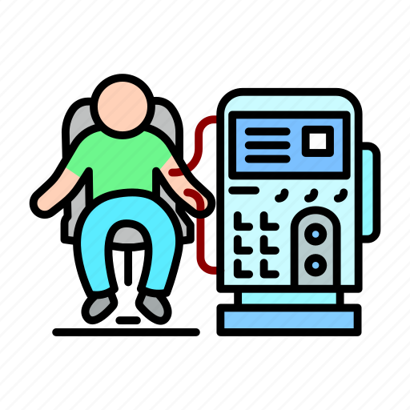

Our Services

Hemodialysis
We offer comprehensive hemodialysis treatment with state-of-the-art equipment and experienced medical staff.

Peritoneal Dialysis
A personalized treatment for kidney failure, providing an effective option for patients who need long-term care.

Home Dialysis Training
We offer detailed training for patients and families who want to perform dialysis at home for more convenience and independence.

Patient Education
We provide essential education to empower patients and caregivers with the knowledge needed for optimal health management.